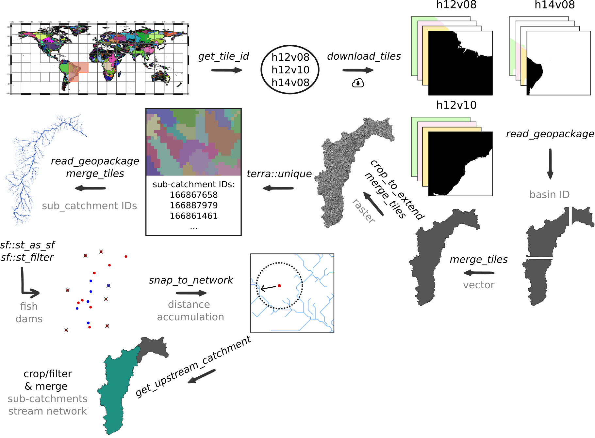
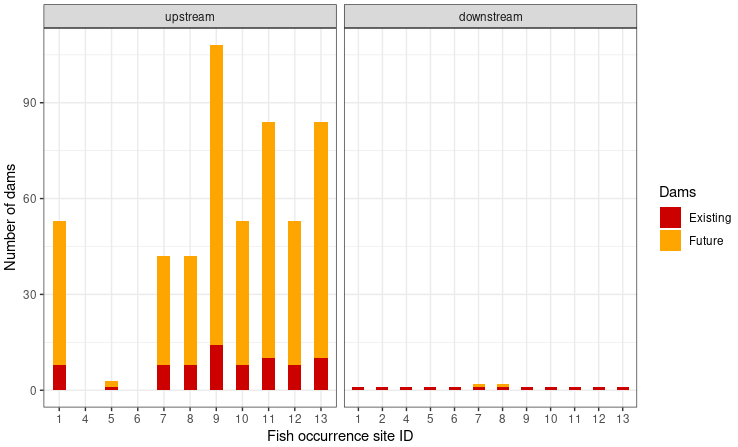

Case study - São Francisco drainage basin
Processing of spatial data and calculating the number of dams and the distance along the stream network to the clostest dam up- and downstream of fish occurence sites
2023-05-22
Source:vignettes/case_study_brazil.Rmd
case_study_brazil.RmdIntroduction
The following example showcases the functionality of the
hydrographr package along a workflow to analyse the
fragmentation of a stream network. We will evaluate how many dams are
up- and downstream of each fish occurrence site and the distance along
the stream network from each fish occurrence site to the next dam for
the current and future state.
In our example we will focus on the catfish species Conorhynchos conirostris, which is a catfish species endemic to the São Francisco drainage basin in Brazil. The catfish is listed as ‘endangered’ by the IUCN red list. Wetlands are the preferred habitat and it is migrating for spawning.As an migratory species, it is mostly threatened by dams along the stream network. Further, it is threatened by fishing during the spawning season in the upstream part of the river.
We will start by defining the regular tiles of the Hydrography90m (Amatulli et al., 2022) where the occurrence points of the species are located. Afterwards we will download the Hydrography90m layers, filter/crop and merge them. Then we will filter our fish occurrence and dam point locations using the polygon of the drainage basin and snap the point locations to the stream network. Afterwards, we will reduce our drainage basin using the dam upstream of all fish occurrence sites as our outlet location to calculate the upstream catchment from this point location. In a next step, we will calculate the distances along the stream network between each point location (fish and dams) and get the up- and downstream stream egments from each point locations as a graph. Afterwards, we will query the tables and evaluate the shortest distance to the next dam as well as the number of dams.
Let’s get started!
# Load libraries
library(hydrographr)
library(terra)
library(sf)
library(rgbif)
library(data.table)
library(dplyr)
library(stringr)
library(purrr)
library(forcats)
library(leaflet)
library(ggplot2)
# Define working directory
wdir <- "my/working/directory/data_brazil"
# Set defined working directory
setwd(wdir)
# Create a directory to store all the data of the case study
dir.create("data")Species data
We will start by downloading occurrence records of Conorhynchos
conirostris from GBIF.org using the R package
rgbif.
# Download occurrence data with coordinates from GBIF
gbif_data <- occ_data(scientificName = "Conorhynchos conirostris",
hasCoordinate = TRUE)
# To cite the data use:
# gbif_citation(gbif_data)
# Clean the data
spdata <- gbif_data$data %>%
select(decimalLongitude, decimalLatitude, species, occurrenceStatus,
country, year) %>%
filter(!is.na(year)) %>%
distinct() %>%
mutate(occurence_id = 1:nrow(.)) %>%
rename("longitude" = "decimalLongitude",
"latitude" = "decimalLatitude") %>%
select(7, 1:6)| occurence_id | longitude | latitude | species | occurrenceStatus | country | year |
|---|---|---|---|---|---|---|
| 1 | -44.88582 | -17.25355 | Conorhynchos conirostris | PRESENT | Brazil | 2021 |
| 2 | -43.59583 | -13.76361 | Conorhynchos conirostris | PRESENT | Brazil | 2020 |
| 3 | -40.49297 | -12.94839 | Conorhynchos conirostris | PRESENT | Brazil | 2020 |
| 4 | -45.78083 | -17.17831 | Conorhynchos conirostris | PRESENT | Brazil | 2018 |
| 5 | -45.90444 | -17.07472 | Conorhynchos conirostris | PRESENT | Brazil | 2014 |
| 6 | -46.89351 | -17.39792 | Conorhynchos conirostris | PRESENT | Brazil | 2012 |
| 7 | -45.24500 | -18.13600 | Conorhynchos conirostris | PRESENT | Brazil | 2009 |
| 8 | -45.24000 | -18.14000 | Conorhynchos conirostris | PRESENT | Brazil | 2009 |
| 9 | -43.13889 | -11.09222 | Conorhynchos conirostris | PRESENT | Brazil | 2001 |
| 10 | -44.95466 | -17.35678 | Conorhynchos conirostris | PRESENT | Brazil | 1998 |
| 11 | -43.96667 | -14.91667 | Conorhynchos conirostris | PRESENT | Brazil | 1998 |
| 12 | -44.95496 | -17.33615 | Conorhynchos conirostris | PRESENT | Brazil | 1942 |
| 13 | -44.35700 | -15.49277 | Conorhynchos conirostris | PRESENT | Brazil | 1932 |
| 14 | -44.35700 | -15.49277 | Conorhynchos conirostris | PRESENT | Brazil | 1907 |
Let’s visualise the species occurrences on a map.
# Define the extent
bbox <- c(min(spdata$longitude), min(spdata$latitude),
max(spdata$longitude), max(spdata$latitude))
# Define color palette for the different years of record
factpal <- colorFactor(hcl.colors(unique(spdata$year)), spdata$year)
# Create leaflet plot
spdata_plot <- leaflet(spdata) %>%
addProviderTiles('Esri.WorldShadedRelief') %>%
setMaxBounds(bbox[1], bbox[2], bbox[3], bbox[4]) %>%
addCircles(lng = ~longitude, lat = ~ latitude, color = ~factpal(as.factor(year)),
opacity = 1) %>%
addLegend(pal = factpal, values = ~as.factor(year),
title = "Year of record")
spdata_plot
Download files
In order to download layers of the Hydrography90m, we need to know the IDs of the 20°x20° tiles in which the occurrence sites are located. We can obtain these IDs using the function get_tile_id(). This function downloads and uses the auxiliary raster file that contains all the regional units globally, and thus requires an active internet connection.
# Get the tile IDs where the points are located
tile_id <- get_tile_id(data = spdata, lon = "longitude", lat = "latitude")
tile_id## [1] "h12v08" "h12v10" "h14v08"Currently the function returns all the tiles of the regional unit where the input points are located. However, some of them may be far from the study area and hence not always needed in further steps. Please double check which tile IDs are relevant for your purpose using the Tile map found here.
In our case, the São Francisco river basin spreads across all three tiles, so we will keep all.
Let’s define the Hydrography90m raster layers and GeoPackages that we would like to download. We will use the basin raster and vector layer, which contains the drainage basin of the São Francisco river basin. The sub_catchment layer, which contains the sub-catchment for each single stream segment with an unique ID. We will need these layers for cropping and filtering.
We will need the raster layer of the stream segment and the flow accumulation to snap our fish occurrence and dam sites to the stream network.
Further, we will download the raster layer of the direction to calculate the upstream catchment from a defined point location.
We will need the Geopackage order_vect_segment, containing the stream network, with the stream (sub-catchment) IDs, the ID of the next stream and some additional attributes. We will need the GeoPackage to to calculate the distance between point locations and to create a graph to find out which stream segments are up- and downstream of the fish occurrence sites.
A list of all available Hydrography90m variables, as well as details and visualisations are available here.
# Variables in raster format
vars_tif <- c("basin", "sub_catchment", "segment", "accumulation", "direction")
# Variables in vector format
vars_gpkg <- c("basin", "order_vect_segment")
# Download the .tif tiles of the desired variables
download_tiles(variable = vars_tif, tile_id = tile_id, file_format = "tif",
download_dir = paste0(wdir, "/data"))
# Download the .gpkg tiles of the desired variables
download_tiles(variable = vars_gpkg, tile_id = tile_id, file_format = "gpkg",
download_dir = paste0(wdir, "/data"))Filtering, cropping and merging
After having downloaded all the layers, we need to filter and crop them to the extent of our study area.
For a faster processing, we recommend to filter (vector) or crop (raster) the files first and than merge them.
First, we will filter the GeoPackage tiles containing the drainage basins for the basin ID 481051 (São Francisco drainage basin) and merge them to get the extent of the drainage basin of São Francisco river. We will then use the polygon of the drainage basin to crop all downloaded raster tiles and then merge them. Afterwards, we will extract the unique sub-catchment IDs from the raster layer to filter the stream network GeoPackage tiles (oder_vect_segment) for stream segments with the same sub-catchment ID and merge them.

# Define a directory for the São Francisco drainage basin
saofra_dir <- paste0(wdir, "/data/basin_481051")
if(!dir.exists(saofra_dir)) dir.create(saofra_dir)
# Get the full path of the basin GeoPackage tiles
basin_dir <- list.files(wdir, pattern = "basin_h[v0-8]+.gpkg$",
full.names = TRUE, recursive = TRUE)
# Filter basin ID from the GeoPackages of the basin tiles
# Save the vector data of the São Francisco drainage basin
for(itile in basin_dir) {
filtered_tile <- read_geopackage(itile,
import_as = "sf",
subc_id = 481051,
name = "ID")
write_sf(filtered_tile, paste(saofra_dir,
paste0(str_remove(basename(itile), ".gpkg"),
"_tmp.gpkg"), sep="/"))
}
# Merge filtered GeoPackage tiles
merge_tiles(tile_dir = saofra_dir,
tile_names = list.files(saofra_dir, full.names = FALSE,
pattern = "basin_.+_tmp.gpkg$"),
out_dir = saofra_dir,
file_name = "basin_481051.gpkg",
name = "ID",
read = FALSE)
# Get the full path of the raster tiles
raster_dir <- list.files(paste0(wdir, "/data/r.watershed"), pattern = ".tif",
full.names = TRUE, recursive = TRUE)
# Crop raster tiles to the extent of the drainage basin
for(itile in raster_dir) {
crop_to_extent(raster_layer = itile,
vector_layer = paste0(saofra_dir, "/basin_481051.gpkg"),
out_dir = saofra_dir,
file_name = paste0(str_remove(basename(itile), ".tif"),
"_tmp.tif"))
}
# Merge the cropped raster layers of the different variables
merge_tiles(tile_dir = saofra_dir,
tile_names = list.files(saofra_dir, full.names = FALSE,
pattern = "basin_.+_tmp.tif$"),
out_dir = saofra_dir,
file_name = "basin_481051.tif")
merge_tiles(tile_dir = saofra_dir,
tile_names = list.files(saofra_dir, full.names = FALSE,
pattern = "segment_.+_tmp.tif$"),
out_dir = saofra_dir,
file_name = "segment_481051.tif")
merge_tiles(tile_dir = saofra_dir,
tile_names = list.files(saofra_dir, full.names = FALSE,
pattern = "accumulation_.+_tmp.tif$"),
out_dir = saofra_dir,
file_name = "accumulation_481051.tif")
merge_tiles(tile_dir = saofra_dir,
tile_names = list.files(saofra_dir, full.names = FALSE,
pattern = "direction_.+_tmp.tif$"),
out_dir = saofra_dir,
file_name = "direction_481051.tif")
# Merge the cropped sub-catchment raster layers and load the file after merging
subc_layer <- merge_tiles(tile_dir = saofra_dir,
tile_names = list.files(saofra_dir, full.names = FALSE,
pattern = "sub_.+_tmp.tif$"),
out_dir = saofra_dir,
file_name = "sub_catchment_481051.tif",
read = TRUE)
subc_layer <- rast(paste0(saofra_dir, "/sub_catchment_481051.tif"))
# Get all sub-catchment IDs of the São Francisco drainage basin
subc_ids <- terra::unique(subc_layer)
# Get the full path of the stream order segment GeoPackages tile
order_dir <- list.files(wdir, pattern = "order_.+_h[v0-8]+.gpkg$",
full.names = TRUE, recursive = TRUE)
# Filter the sub-catchment IDs from the GeoPackages of the order_vector_segment
# tiles (sub-catchment ID = stream ID)
# Save the stream segments of the São Francisco drainage basin
for(itile in order_dir) {
filtered_tile <- read_geopackage(itile,
import_as = "sf",
subc_id = subc_ids$sub_catchment_481051,
name = "stream")
write_sf(filtered_tile, paste(saofra_dir,
paste0(str_remove(basename(itile), ".gpkg"),
"_tmp.gpkg"), sep="/"))
}
# Merge filtered GeoPackage tiles
# This process takes a few minutes
merge_tiles(tile_dir = saofra_dir,
tile_names = list.files(saofra_dir, full.names = FALSE,
pattern = "order_.+_tmp.gpkg$"),
out_dir = saofra_dir,
file_name = "order_vect_segment_481051.gpkg",
name = "stream",
read = FALSE)
# Delete temporary files of the filtered and cropped tiles
tmp_files <- list.files(saofra_dir, pattern = "_tmp.",
full.names = TRUE, recursive = TRUE)
file.remove(tmp_files)Filtering of the species occurrence and dam locations
The information of present and future dam locations is provided by the GRanD and the FHRed database, respectively. Both datasets can be downloaded from globaldamwatch.org.
To filter the point locations of the fish occurrence and dams we will
use the polygon of the drainage basin to only keep the locations which
are located within the drainage basin. For this step we will use the
functions of the sf package.

# Load the GRanD data shape file
grand_pts <- st_read(paste0(wdir, "/data/GRanD_Version_1_3/GRanD_dams_v1_3.shp"))
# Load FHRed dataset
fhred_corr <- fread(paste0(wdir, "/data/FHReD_2015/FHReD_2015_future_dams_Zarfl_et_al_beta_version.csv"))
# Load the polygon of the drainage basin
basin_poly <- read_sf(paste0(saofra_dir,"/basin_481051.gpkg"))
# Create a simply feature for the function st_filter
spdata_pts <- st_as_sf(spdata, coords = c("longitude","latitude"), remove = FALSE, crs="WGS84")
fhred_pts <- st_as_sf(fhred_corr, coords = c("Lon_Cleaned","LAT_cleaned"), crs="WGS84")
# Only keep species occurrence and dam sites within the drainage basin
spdata_pts_481051 <- st_filter(spdata_pts, basin_poly)
grand_pts_481051 <- st_filter(grand_pts, basin_poly)
fhred_pts_481051 <- st_filter(fhred_pts, basin_poly)
# Transfer the simply feature back to a data.frame and harmonize column names
# Existing dams (ED)
existing_dams <- grand_pts_481051 %>%
mutate(longitude = st_coordinates(.)[,1],
latitude = st_coordinates(.)[,2]) %>%
st_drop_geometry() %>%
mutate(type = "ED") %>%
rename(site_id = GRAND_ID) %>%
select(site_id, type, longitude, latitude)
# Future dams (Under construction UD, planned PD)
future_dams <- fhred_pts_481051 %>%
mutate(longitude = sf::st_coordinates(.)[,1],
latitude = sf::st_coordinates(.)[,2]) %>%
sf::st_drop_geometry() %>%
mutate(type = paste0(.$Stage, "D")) %>%
rename(site_id = DAM_ID) %>%
select(site_id, type, longitude, latitude)
# Fish occurrence (FS)
species_occurrence <- spdata_pts_481051 %>%
sf::st_drop_geometry() %>%
mutate(type = "FS") %>%
rename(site_id = occurence_id) %>%
select(site_id, type, longitude, latitude)
# Bind the data.frames of the dame locations and the fish occurrence
# Remove sites of the same type with duplicated coordinates
point_locations <- existing_dams %>%
bind_rows(future_dams) %>%
bind_rows(species_occurrence) %>%
distinct(type, longitude, latitude, .keep_all = TRUE)Snap species occurrence and dam sites to a stream segment within a certain distance and with a certain flow accumulation
Before we can calculate the upstream catchment for a defined point location or the distance along the stream network between species occurrence and dam sites, we need to snap the coordinates of the sites to the stream network. (Recorded coordinates of point locations usually do not exactly overlap with the digital stream network and therefore need to be corrected slightly.)
The hydrographr package offers two different snapping
functions the snap_to_network and the
snap_to_subc_segment. The first function uses a defined
distance radius and a flow accumulation threshold, while the second
function snaps the point location to the stream segment of the
sub-catchment the point was originally located.
For this case study we will use the function
snap_to_network to be able to define a certain flow
accumulation threshold and to ensure that the fish occurrence and dam
sites will not be snapped to a headwater stream (first order stream)
also there is a higher order stream next to it.

The function is implemented in a for-loop to start searching for streams with a very high flow accumulation of 400,000 km² in a very short distance and than slowly decrease the flow accumulation to 100 km². If there are still sites left which were not snapped to stream segment yet. The distance will increase from 10 up to 30 cells.
In addition to the new coordinates the function will also report the unique sub-catchment ID.
# Define full path to the stream network raster layer
stream_rast <- paste0(saofra_dir, "/segment_481051.tif")
# Define full path to the flow accumulation raster layer
flow_rast <- paste0(saofra_dir, "/accumulation_481051.tif")
# Define thresholds for the flow accumulation of the stream segment, where
# the point location should be snapped to
accu_threshold <- c(400000, 300000, 100000, 50000, 10000, 5000, 1000, 500, 100)
# Define the distance radius
dist_radius <- c(10, 20, 30)
# Create a temporary data.table
point_locations_tmp <- point_locations
# Note: For loop takes about 9 minutes
first <- TRUE
for (idist in dist_radius) {
# If the distance increases to 20 cells only a flow accumulation of 100 km²
# will be used
if (idist == 20) {
# Set accu_threshold to 100
accu_threshold <- c(100)
}
for (iaccu in accu_threshold) {
# Snap point locations to the stream network
point_locations_snapped_tmp <- snap_to_network(data = point_locations_tmp,
lon = "longitude",
lat = "latitude",
id = "site_id",
stream_layer = stream_rast,
accu_layer = flow_rast,
method = "accumulation",
distance = idist,
accumulation = iaccu,
quiet = FALSE)
# Keep point location with NAs for the next loop
point_locations_tmp <- point_locations_snapped_tmp %>%
filter(is.na(subc_id_snap_accu))
if (first == TRUE) {
# Keep the point locations with the new coordinates and remove rows with NA
point_locations_snapped <- point_locations_snapped_tmp %>%
filter(!is.na(subc_id_snap_accu))
first <- FALSE
} else {
# Bind the new data.frame to the data.frame of the loop before
# and remove the NA
point_locations_snapped <- point_locations_snapped %>%
bind_rows(point_locations_snapped_tmp) %>%
filter(!is.na(subc_id_snap_accu))
}
}
}In some cases the GRASS GIS function r.stream.snap does not snap some of the sites to the stream network, no matter how much you increase the distance radius. If this happens the coordinates need to be changed slightly within the same cell until the point gets snapped. I might happen that this needs to be done multiple times.
# Run the snapping function until all points are snapped
# Note the while conditions runs a few times and
# takes about 5 minutes
while(nrow(point_locations_tmp) > 0) {
# Create random number smaller than the size if a cell
rn <- runif(n=1, min=-0.000833333, max=+0.000833333)
# Add random number to the longitude and latitude
point_locations_tmp <- point_locations_tmp %>%
mutate(longitude = longitude + rn,
latitude = latitude + rn)
point_locations_snapped_tmp <- snap_to_network(data = point_locations_tmp,
lon = "longitude",
lat = "latitude",
id = "site_id",
stream_layer = stream_rast,
accu_layer = flow_rast,
method = "accumulation",
distance = idist,
accumulation = iaccu,
quiet = FALSE)
# Keep point location with NAs for the next loop
point_locations_tmp <- point_locations_snapped_tmp %>%
filter(is.na(subc_id_snap_accu))
# Bind the new data.frame to the data.frame of the loop before
# and remove the NA
point_locations_snapped <- point_locations_snapped %>%
bind_rows(point_locations_snapped_tmp) %>%
filter(!is.na(subc_id_snap_accu))
}| site_id | longitude | latitude | lon_snap_accu | lat_snap_accu | subc_id_snap_accu |
|---|---|---|---|---|---|
| 1 | -44.88582 | -17.25355 | -44.88542 | -17.25375 | 168036446 |
| 5 | -45.90444 | -17.07472 | -45.90458 | -17.07458 | 167997751 |
| 7 | -45.24500 | -18.13600 | -45.24542 | -18.13625 | 168219537 |
| 9 | -43.13889 | -11.09222 | -43.13292 | -11.09125 | 166443527 |
| 473 | -45.36667 | -22.37292 | -45.36708 | -22.37292 | 168880587 |
| 484 | -44.84444 | -22.23542 | -44.84458 | -22.23542 | 168869594 |
# Load the polygon of the drainage basin
basin_poly <- read_sf(paste0(saofra_dir,"/basin_481051.gpkg"))
# Define the extent
bbox <- c(min(spdata$longitude), min(spdata$latitude),
max(spdata$longitude), max(spdata$latitude))
point_locations_snapped <- point_locations[ ,1:2] %>%
left_join(., point_locations_snapped,
by=c("site_id")) %>%
mutate(type = factor(type, levels = c("FS", "ED", "UD", "PD")))
# Define color palette for the different site types
pal <- colorFactor(
palette = c('blue', 'red', 'orange', 'yellow'),
domain = point_locations_snapped$type
)
labels <- c("Fish occurrence", "Existing dam", "Dam under construction ", "Planned dam")
# Create leaflet plot
locations_plot <- leaflet() %>%
addProviderTiles('Esri.WorldShadedRelief') %>%
setMaxBounds(bbox[1], bbox[2], bbox[3], bbox[4]) %>%
addPolygons(data = basin_poly ,color = "#444444", weight = 1, smoothFactor = 0.5,
opacity = 1.0, fillOpacity = 0.5 ) %>%
#addPolylines(data = stream_vect) %>%
addCircles(data = point_locations_snapped, lng = ~lon_snap_accu,
lat = ~lat_snap_accu, radius = 0.2, color = ~pal(type),
opacity = 1) %>%
addLegend(data = point_locations_snapped, pal = pal, values = ~type,
labFormat = function(type, cuts, p) {paste0(labels)},
title = "Site type")
locations_plotSnap point locations to the stream segment within the sub-catchment with the same unique ID
We will not use the snap_to_subc_segment in this example
and the code below is just to show the second option to snap point
locations to the stream network. Points snapped with this function will
always be located in the middle of the stream segment. For the
calculation the function needs the unique basin and sub- catchment IDs.
This can be done before by using the function extract_ids
or if the arguments subc_id and basin_id are set to NULL the
snap_to_subc_segment function will extract the IDs as
well.
# # Define full path to the GeoPackage of the stream segments
# stream_vect <- paste0(saofra_dir, "/order_vect_segment_481051.gpkg")
#
#
# # Note: The snapping of 138 points will takes about an hour
# # Snap point locations to the stream segment within the sub-catchment the fish
# # occurrence or dam site is located
# point_data_snapped <- snap_to_subc_segment(data = point_locations,
# lon = "longitude",
# lat = "latitude"",
# id = "site_id",
# basin_id = NULL,
# subc_id = NULL,
# basin_layer = basin_rast,
# subc_layer = subc_rast,
# stream_layer = stream_vect,
# n_cores = 3)Get upstream catchment
On the website of the IUCN red
list we can see that the habitat range of Conorhynchos
conirostris is
restricted to the areas upstream of the Sobradinho dam (site ID 2516)
and all our fish occurrence sites are located upstream of the dam as
well. Therefore, we are only interested in dams upstream of the
Sobradinho dam. To get the upstream catchment from the point location of
the Sobradinho dam we will use the function
get_upstream_catchment. Afterwards we will use the
terra package to polygonise the raster file of the upstream
catchment and use the polygon of the upstream catchment to filter our
point locations using the functions provided by the sf
package.

# Define full path for the direction raster layer
direction_rast <- paste0(saofra_dir, "/direction_481051.tif")
# Define full path for the output
upcatch_dir <- paste0(saofra_dir, "/upstream_catchment")
# Create output folder if it doesn't exist
if(!dir.exists(upcatch_dir)) dir.create(upcatch_dir)
# Get the upstream catchment of ED 2516
# Increasing the number of cores only makes sense if the calculation
# is done for multiple points
get_upstream_catchment(as.data.table(point_locations_snapped)[site_id == 2516,],
lon = "lon_snap_accu",
lat = "lat_snap_accu",
id = "site_id",
direction_layer = direction_rast,
out_dir = upcatch_dir,
n_cores = 1)
# Load raster file of the upstream catchment
upstream_basin_rast <- rast(paste0(upcatch_dir , "/upstream_basin_2516.tif"))
# Polygonise the raster
upstream_basin_vect <- as.polygons(upstream_basin_rast)
# Save the vector file of the upstream catchment
writeVector(upstream_basin_vect, paste0(upcatch_dir , "/upstream_basin_2516.gpkg"),
filetype = "gpkg", overwrite=TRUE )
upstream_subc_rast <- crop_to_extent(raster_layer = paste0(saofra_dir,
"/sub_catchment_481051.tif"),
vector_layer = paste0(upcatch_dir ,
"/upstream_basin_2516.gpkg"),
out_dir = upcatch_dir,
file_name = "sub_catchment_2516.tif",
read = TRUE)
# Get all sub-catchment IDs of the upstream basin
subc_ids <- terra::unique(upstream_subc_rast)
# Filter the sub-catchment IDs from the GeoPackages of the order_vector_segment
# basin file (sub-catchment ID = stream ID)
upstream_segment_vect <- read_geopackage(gpkg = paste0(saofra_dir,
"/order_vect_segment_481051.gpkg"),
import_as = "sf",
subc_id = subc_ids$sub_catchment_2516,
name = "stream")
# Save the stream segments of the upstream drainage basin
write_sf(upstream_segment_vectt, paste0(upcatch_dir, "/order_vect_segment_2516.gpkg"))
# Convert the data.frame into a simply feature
point_locations_snapped_pts <- st_as_sf(point_locations_snapped,
coords = c("lon_snap_accu","lat_snap_accu"),
remove = FALSE, crs="WGS84")
# Save point locations as a GeoPackage
# write_sf(point_locations_snapped_pts, paste0(upcatch_dir, "/point_locations_snapped_2516.gpkg"))
# Use the polygon to filter the upstream point locations
upstream_point_locations <- st_filter(point_locations_snapped_pts,
st_as_sf(upstream_basin_vect)) %>%
sf::st_drop_geometry()
# Save upstream point locations
fwrite(upstream_point_locations, paste0(upcatch_dir, "/upstream_point_locations_2516.csv"))
# Load the gpkg of the upstream basin (if not already loaded)
# upstream_basin_vect <- vect(paste0(upcatch_dir , "/upstream_basin_2516.gpkg"))
# Create leaflet plot
upcatch_plot <- leaflet() %>%
addProviderTiles('Esri.WorldShadedRelief') %>%
setMaxBounds(bbox[1], bbox[2], bbox[3], bbox[4]) %>%
addPolygons(data = st_as_sf(upstream_basin_vect) ,color = "#444444", weight = 1, smoothFactor = 0.5,
opacity = 1.0, fillOpacity = 0.5 ) %>%
#addPolylines(data = stream_vect) %>%
addCircles(data = upstream_point_locations, lng = ~lon_snap_accu,
lat = ~lat_snap_accu, radius = 0.2, color = ~pal(type),
opacity = 1) %>%
addLegend(data = upstream_point_locations, pal = pal, values = ~type,
labFormat = function(type, cuts, p) {paste0(labels)},
title = "Site type")
upcatch_plot
Get distance along the stream network
To determine the distance to the closest dam up- and downstream of
each fish occurrence site we will first calculate the distance between
all point locations using the function get_distance.
# Load layers (if not already loaded)
# upstream_basin_rast <- paste0(upcatch_dir, "/upstream_basin_2516.tif")
# upstream_segment_vect <- paste0(upcatch_dir, "/order_vect_segment_2516.gpkg")
# Get the distances along the stream network between each pair of point locations
# The process takes about 1 hour
# Increasing the number of cores only makes sense if the calculation
# is done for points in multiple drainage basins
upstream_point_locations <- upstream_point_locations %>%
mutate(basin_id = 2516)
network_distance <- get_distance(data = upstream_point_locations,
lon = "lon_snap_accu",
lat = "lat_snap_accu",
id = "site_id",
basin_id = "basin_id",
basin_layer = upstream_basin_rast,
stream_layer = upstream_segment_vect,
distance = "network",
n_cores = 1)| from_site_id | to_site_id | dist |
|---|---|---|
| 2373 | 2375 | 822666 |
| 2373 | 2396 | 1564589 |
| 2373 | 2516 | 1768802 |
| 2373 | 2521 | 1752916 |
| 2373 | 2530 | 1201006 |
| 2373 | 2531 | 1067073 |
Get catchment graph
To evaluate which and how many dames are located up- and downstream
of the fish occurrence sites, we need to load the GeoPackage of the
stream segments ( order_vect_segment) as a graph. Further we will need
the sub-catchment IDs of the fish occurrence sites to use the function
get_catchment_graph. The function will return for each fish
occurrence site all sub-catchment IDs which are located up- or
downstream.
# Define full path to the GeoPackage of the stream segments
# upstream_segment_vect <- paste0(upcatch_dir, "/order_vect_segment_2516.gpkg")
# Load the GeoPackage as graph
stream_network_graph <- read_geopackage(gpkg = upstream_segment_vect, import_as = "graph")
# Get sub-catchment IDs of the fish occurrence sites
fs_subc_ids <- upstream_point_locations %>%
rename(subcatchment_id = subc_id_snap_accu) %>%
filter(site_id %in% c(1:2, 4:14)) %>%
.$subcatchment_id %>%
unique() %>%
as.character()
# Get all stream segment IDs (=sub-catchments IDs) upstream for each
# fish occurrence site
# Note: There will be no output for fish occurrence sites which are located
# in headwaters (Strahler order 1)
upstream_segments <- get_catchment_graph(g = stream_network_graph,
subc_id = fs_subc_ids, mode = "in")
# Get all stream segment IDs downstream for each
# fish occurrence site
# Note: There will be no output for fish occurrence sites which are located
# in the last segments before the outlet
downstream_segments <- get_catchment_graph(g = stream_network_graph,
subc_id = fs_subc_ids, mode = "out")Here the head of an example data.frame of one fish occurrence site (sub-catchment ID 168036446).
| stream | next_stream | prev_str01 | prev_str02 | prev_str03 | prev_str04 | strahler | horton |
|---|---|---|---|---|---|---|---|
| 168312446 | 168313029 | 0 | 0 | 0 | 0 | 1 | 1 |
| 168312604 | 168313165 | 0 | 0 | 0 | 0 | 1 | 1 |
| 168310758 | 168310607 | 0 | 0 | 0 | 0 | 1 | 1 |
| 168310759 | 168310307 | 0 | 0 | 0 | 0 | 1 | 1 |
| 168310447 | 168310448 | 168309541 | 168310757 | 0 | 0 | 2 | 4 |
| 168310308 | 168310008 | 0 | 0 | 0 | 0 | 1 | 1 |
Determine the number of dams and the distance alonge the network to the closest dam
After we have determined the distance between the point locations and now the sub-catchment IDs up- and downstream of each fish occurrence site we can estimate the number of dams and evaluate the distance to the closest dam.
# Get all sub-catchment IDs of fish occurrence sites with stream
# segments upstream
fs_subc_ids_up <- names(upstream_segments)
# Get site IDs of the fish occurrence sites
fs_site_id <- upstream_point_locations %>%
filter(subc_id_snap_accu %in% fs_subc_ids_up) %>%
arrange(match(subc_id_snap_accu, fs_subc_ids_up)) %>%
select(site_id) %>%
rename(from_site_id = site_id)
# Get the sub-catchment IDs where the existing dams are located
ed_site_id <- upstream_point_locations %>%
filter(type == "ED") %>%
rename(stream = subc_id_snap_accu) %>%
mutate(stream = as.character(stream))
# Get the number of existing dams upstream and the distance to the closest
# dam upstream
ed_upstream <- upstream_segments %>%
map(., ~ inner_join(ed_site_id, .x, by= "stream")) %>%
map2(., fs_site_id$from_site_id, ~ mutate(.x, from_site_id = .y)) %>%
list_rbind(.) %>%
rename(., to_site_id = site_id) %>%
select(., from_site_id, to_site_id) %>%
inner_join(network_distance, ., by=c("from_site_id", "to_site_id")) %>%
group_by(from_site_id) %>%
mutate(., n_dams = n()) %>%
filter(., dist == min(dist)) %>%
left_join(fs_site_id, ., by = "from_site_id") %>%
mutate(type = "ED",
direction = "upstream")
# Get the sub-catchment IDs where the future dams will be located
fd_site_id <- upstream_point_locations %>%
filter(site_id > 100 & site_id < 2000) %>%
rename(stream = subc_id_snap_accu) %>%
mutate(stream = as.character(stream)) %>%
inner_join(.,point_locations, by = c("site_id", "longitude", "latitude"))
# Get the number of future dams upstream and the distance to the closest
# dam upstream
fd_upstream <- upstream_segments %>%
map(., ~ inner_join(fd_site_id, .x, by= "stream")) %>%
map2(., fs_site_id$from_site_id, ~ mutate(.x, from_site_id = .y)) %>%
list_rbind(.) %>%
rename(., to_site_id = site_id) %>%
select(., from_site_id, to_site_id) %>%
inner_join(network_distance, ., by=c("from_site_id", "to_site_id")) %>%
group_by(from_site_id) %>%
mutate(., n_dams = n()) %>%
filter(., dist == min(dist)) %>%
left_join(fs_site_id, ., by = "from_site_id") %>%
mutate(type = "FD",
direction = "upstream")
# Get all sub-catchment IDs of fish occurrence sites with stream
# segments downstream
fs_subc_ids_down <- names(downstream_segments)
# Get unique site IDs of the fish occurrence sites
fs_site_id <- upstream_point_locations %>%
filter(subc_id_snap_accu %in% fs_subc_ids_down) %>%
arrange(match(subc_id_snap_accu, fs_subc_ids_down)) %>%
select(site_id) %>%
rename(from_site_id = site_id) %>%
filter(from_site_id != 14)
# Get the number of existing dams downstream and the distance to the closest
# dam downstream
ed_downstream <- downstream_segments %>%
map(., ~ inner_join(ed_site_id, .x, by= "stream")) %>%
map2(., fs_site_id$from_site_id, ~ mutate(.x, from_site_id = .y)) %>%
list_rbind(.) %>%
rename(., to_site_id = site_id) %>%
select(., from_site_id, to_site_id) %>%
inner_join(network_distance, ., by=c("from_site_id", "to_site_id")) %>%
group_by(from_site_id) %>%
mutate(., n_dams = n()) %>%
filter(., dist == min(dist)) %>%
left_join(fs_site_id, ., by = "from_site_id") %>%
mutate(type = "ED",
direction = "downstream")
# Get the number of future dams downstream and the distance to the closest
# dam downstream
fd_downstream <- downstream_segments %>%
map(., ~ inner_join(fd_site_id, .x, by= "stream")) %>%
map2(., fs_site_id$from_site_id, ~ mutate(.x, from_site_id = .y)) %>%
list_rbind(.) %>%
rename(., to_site_id = site_id) %>%
select(., from_site_id, to_site_id) %>%
inner_join(network_distance, ., by=c("from_site_id", "to_site_id")) %>%
group_by(from_site_id) %>%
mutate(., n_dams = n()) %>%
filter(., dist == min(dist)) %>%
left_join(fs_site_id, ., by = "from_site_id") %>%
mutate(type = "FD",
direction = "downstream")
# Bind tables
dam_num_dist <- ed_upstream %>%
bind_rows(fd_upstream) %>%
bind_rows(ed_downstream) %>%
bind_rows(fd_downstream)
# Prepare data.frame for the plot
plot_data <- dam_num_dist %>%
mutate(dist = dist/1000) %>%
mutate(direction = factor(direction, levels = c("upstream", "downstream")))
# Define colors
cols <- c(ED = "#E69F00", FD = "#56B4E9")
# Create plot to show the number of dams
ggplot(plot_data, aes(x = as.factor(from_site_id), y = n_dams, fill = fct_rev(type))) +
geom_bar(stat="identity", position= "stack", width = 0.5) +
facet_grid(~ direction, scales = "free") +
theme_bw() +
scale_fill_manual(name = "Dams",
breaks = c("ED", "FD"),
labels = c("Existing", "Future"),
values = cols) +
labs(x = "Fish occurrence site ID", y = "Number of dams")
With the exception of the fish occurrence sites 4 and 6 the number of upstream dams will dramatically increase. Especially for site 9, which has already 14 dams located upstream, the number might increase in the future to 94 dams. Downstream of all fish occurrence sites there is currently only one existing dam. It is the dam with the ID 2516 at the outlet of our delineated upstream catchment. This leads to the assumption that all fish occurrence sites are currently connected. In the future the number of dams will increase for the fish occurrence sites 7 and 8 from one to two dames. The future dam might lead to a disconnection of these two sites from the others.
# Create plot to show the distance to the closest dam
ggplot(plot_data, aes(x = as.factor(from_site_id), y = dist, fill = type)) +
geom_bar(stat="identity", position= "dodge", width = 0.5) +
facet_grid(~ direction, scales = "free") +
theme_bw() +
scale_fill_manual(name = "Dams",
breaks = c("ED", "FD"),
labels = c("Existing", "Future"),
values = cols) +
labs(x = "Fish occurrence site ID", y = "Distance along the stream network (km)")
The distance to the next existing dam upstream ranges from 12.6km for the fish occurrence site 8 to 528.9km for the fish occurrence site 9. For most sites the the distance to the next dam upstream will decrease in the future. Only for the fish occurrence sites 7 and 8 the next future dam upstream will farther away than the existing dam. The distance to the existing dam downstream ranges between 415.2km and 1672.0km. In the future the distance for the next dam downstream will decrease from about 1475km to about 114km for the fish occurrence sites 7 and 8.